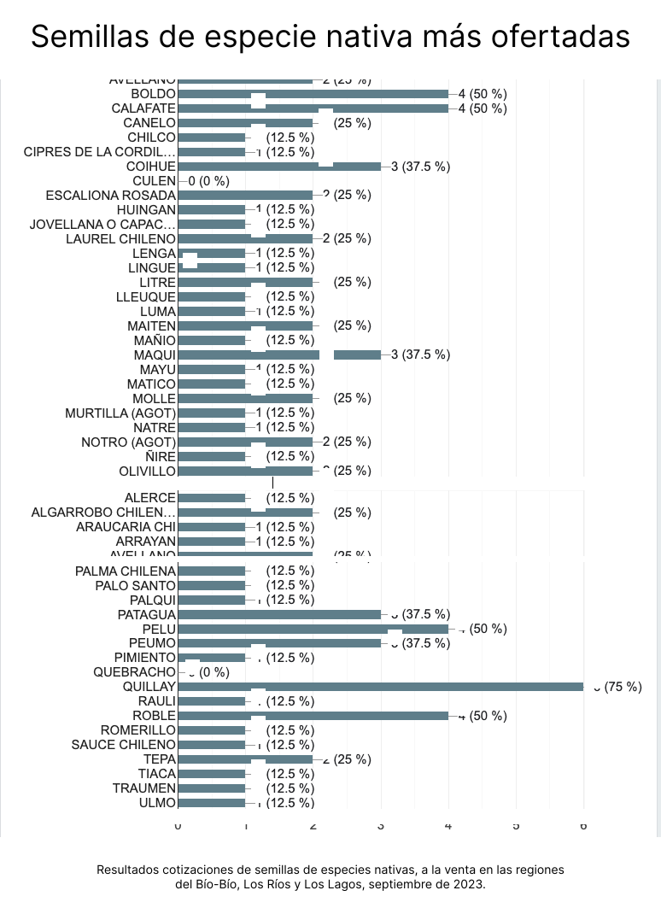

INTRODUCCIÓN
Al hablar de restauración de ecosistemas boscosos se hace referencia a la intención de recuperar un ecosistema dañado, degradado o destruido por diversos factores, ya sean naturales, como incendios, o referidos a daños causados por la acción humana. como la sobreexplotación de recursos forestales. Los esfuerzos en la materia en Chile están dados en distintos programas, tanto públicos como privados, que pretenden recuperar una gran cantidad de terrenos dañados para lo cual demandan diversos productos y servicios y así dar respuesta a esta necesidad. El Instituto del Medio Ambiente IDMA identificó en este mercado la posibilidad de crear nuevas oportunidades de empleo para nuevos emprendedores en el área de la restauración. Para dar validez al planteamiento del IDMA se encarga este estudio dirigido a identificar estas oportunidades y posibles restricciones, específicamente en las regiones del Bío Bío, Los Ríos y Los Lagos para el periodo 2023-2024.
Pese a que la actividad de restauración no es nueva en el mercado, la información disponible al respecto sigue siendo limitada. La siguiente investigación pretende dilucidar las necesidades que de esta actividad se desprenden y la posibilidad de abrir espacio en el mercado de restauración para nuevos emprendimientos.
El estudio ofrece una visión general, aunque no menos valiosa, del mercado de restauración de ecosistemas boscosos en las regiones del Bío Bío, Los Ríos y Los Lagos, dadas las limitaciones de tiempo y recursos disponibles, y de igual manera se espera que sirva como un valioso punto de partida para futuras investigaciones más detalladas y proyectos más específicos.
Para poder identificar la información requerida fue necesario indagar en el corazón del mercado existente, de esta manera se accedió a entrevistas con actores directos involucrados en la actividad de restauración, tanto de organismos públicos como privados, así como con personas comunes y corrientes que ven en este mercado una posibilidad de iniciar una actividad de emprendimiento con objetivos lucrativos y también altruistas de conservación ambiental.
OBJETIVO GENERAL DEL ESTUDIO
Identificar las oportunidades y limitaciones que confrontan los potenciales emprendedores y actores existentes en el mercado de la restauración de ecosistemas boscosos en las regiones de Bío Bío, Los Ríos y Los Lagos durante el periodo 2023-2024, además de evaluar las fuentes de financiamiento y fondos concursables disponibles para respaldar iniciativas en el ámbito de la restauración en estas regiones durante dicho periodo


CONSTANZA TROPPA TAPIA
GERENTE DE CONSERVACIÓN DE
ECOSISTEMAS
BOSCOSOS Y CAMBIO CLIMÁTICO DE CONAF
En Conaf, tenemos 3 tipos de iniciativas, orientadas a la recuperación del ecosistema
boscoso:
1. Plan de Restauración de Bosques Nativos a Gran Escala, programa especial conocido como “Siembra Por Chile”, que comenzó el 2022 y que esperamos se prolongue hasta
el 2025, pero cada año hay que pelear el presupuesto, ya que, por primera vez, pasó a la Ley de Presupuestos
(del sector público). El objetivo es iniciar procesos de restauración con 3 componentes:
- Programa de recolección de semillas.
- Fortalecimiento de viveros.
- Restauración in situ q son faenas forestales.
Conaf se abrió a otros beneficiarios, como viveristas, personas que tienen un pequeño bosque, pero no aparecen como propietarios formalmente; comunidades indígenas que les falta terminar la tramitación de propiedad con la CONADI, pero sí tienen terrenos; y no sólo a pequeños propietarios y no todos los actores de la cadena caben dentro de esa definición legalmente. Hay 2 tipos de beneficiarios: la gente que vive donde hacemos las intervenciones y la gente que es beneficiaria, producto de la generación de empleo.
Entonces, estos últimos, hay 2 tipos de contratos: los que genera la CONAF con esas personas,
principalmente, viveristas; y gente que apoya el programa a nivel regional y que tienen 2 ó 3
perfiles,
por así decirlo, como ingenieros que hacen la asistencia técnica para planes de manejo, que es
obligatorio
por ley; y técnicos en ejecución y que nos ayudan para todo lo que tiene q ver con el programa de
fomento
en terreno; y los viveristas de los viveros de Conaf que están contratados por el programa de empleo
de
emergencia de la Subsecretaría del Trabajo.
2. La Ley 20283 de Bosque Nativo, que nace el 2008, que es el único instrumento estructural de
fomento,
y que tiene un mecanismo de asignación de fomento vía concurso público con una cartera de pequeños
propietarios y otra de interesados. Permite bonificar 3 tipos de objetivos:
- Bosques de Conservación: q tiene q ver con bosques de preservación con un máximo de 5 UTM por hectárea.
- Productos Forestales No Madereros: con un máximo de 5 UTM por hectárea.
- Literal C: con un máximo de 10 UTM por hectárea con objetivos madereros.
Uno de los problema es que sigue siendo un monto insuficiente para ser manejo forestal sustentable y que se paga por una sola vez. Además, es donde se obtiene menos retorno por preservación o de productos forestales no maderero me otorga la mitad de la bonificación, 5 UTM por hectárea. En cambio el maderero, sí obtiene se puede recibir retorno, se recibe 10 UTM por hectárea. El otro problema es que es muy burocrático: se postula con un proyecto, se evalúa por 8 meses, luego tengo que presentar el Plan de Manejo que son 3 meses más, y ya se pasó la temporada de ejecución, entonces, hay que esperar hasta el otro año. Sin embargo, hay igual alta demanda. Es una bonificación del estado y se postula vía concurso público y esa persona es la que debe ejecutar la actividad y hay hartas persona que viven en el campo que son mayores de 65 años y van ejecutando como pueden. Además, no tienen asistencia técnica, no hay mano de obra para lo forestal y poco manejo tecnológico.
3. Hace muchos años, desde el 2012, que estamos trabajando el cambio climático y ya desde el 2017, contamos con una estrategia de cambio climático, porque Chile no es un país emisor de gases de efecto invernadero, en comparación con otros países; pero sí tenemos mucho potencial para mitigar el cambio climático y Chile es muy vulnerable al cambio climático, dado a su condición geomorfológica, tenemos desierto en la zona norte hasta llegar a la zona polar en el extremo sur. Pasamos por muchos ecosistemas y por eso somos muy vulnerables a condiciones climáticas como sequías, altas temperaturas, etc.
Vimos una oportunidad para entrar a REDD+ (Reducing emissions from deforestation and forest degradation) que hace referencia a la reducción de emisiones de gases de efecto invernadero debidas a la deforestación y degradación de los bosques, la conservación y aumento de las reservas de carbono y el manejo forestal sostenible. Contamos con todos los requisitos y tenemos una estrategia de cambio climático.
Chile tuvo que acreditar que redujo disminución de emisiones y, por lo tanto, el Fondo Verde del Clima le entregó un fondo de 64 millones de dólares al país. Entonces, este programa tiene una cobertura desde la región del Maule a la región de Los Lagos. Este lo ejecutamos con FAO. Tenemos una cartera de proyectos de pequeños propietarios y comunidades indígenas; y la otra cartera de proyectos priorizados son de mayor superficie. Llegaron 30 mil hectáreas de demanda.
Se financian 5 tipos de actividades:
- Forestación y revegetación sólo con especies nativas.
- Manejo de bosque nativo con criterios de ordenación forestal
- Restauración por incendio forestal.
- Silvicultura preventiva.
- Actividades que tienen que ver con educación ambiental y transferencia técnica.
ALAMIRO GASPAR NAVARRETE GUERRA
INGENIERO RESTAURACIÓN Y ESTUDIO
AMBIENTAL DE FORESTAL MININCO S.A.
En Chile Central, están los proyectos con más avances. Más relevantes y más grandes, son el Constitución, Maule: Bosque maulino, presencia de “ril”?, captaciones de agura, cuencas. Apuntando hoy en día, BÁSICAMENTE, en recuperar algunos servicios ecosistémico. La recreación se ha hecho bastante relevante en el último tiempo. Al principio fueron otros atributos como agua o especies protegidas, se fueron agregando otros como la recreación. Es un gran desafío compatibilizar esos intereses. Cómo restauro, cómo recupero, pero también cómo permito las actividades recreativas. Si no las trabajamos bien, pueden ser totalmente incompatibles o, al menos, entorpecer el desarrollo normal de recuperación de un ecosistema.
También, la restauración de valles de alto valor de conservación. Las empresas forestales certificadas adhieren a distintos certificados y estos, dentro de las exigencias que te hacen, tienes que hacer una relevamiento relacionado con temas de biodiversidad y tienen que estar las áreas de alto valor de conservación. Y yo veo uno de los 3 tipos: las áreas de alto valor sociales, asociadas a la captación de aguas; las áreas de valor culturales, asociados a sitios donde se desarrollan actividades de valor cultural o ceremonial; y las áreas de alto valor biológico, relacionadas con flora y fauna en alguna condición crítica. Monitoreo y restauración de estas áreas de alto valor lo veo con asesores externos. Hay hartos, algunos independientes, otros académicos de universidades.
Internamente soy yo el responsable del área de restauración y hay empresas de servicios que ejecutan, si hay que hacer plantaciones, eliminación de exóticas, lo que haya que hacer. Trabajamos con empresas locales que son las que mejor han funcionado, llevan hartos años con nosotros, 6 a 7 años, han adquirido bastante experticia que es lo que necesitamos, porque es un proceso largo de aprendizaje, y me refiero a aprendizaje cuando 1. Aprender o ir desarrollando las técnicas que más se adecuan a cada situación y 2. Tener la capacidad de ir haciendo las adaptaciones que sean necesario y eso no es fácil. No es como la típica empresa forestal ue es un manual y tú vas y lo aplicas. Aquí es distinto, porque hay mucho que adaptarse y eso te cambia la visión completamente. Necesito que el personal que ejecuta las labores del campo esté siempre abierto a cambiarse adaptarse y a proponer. Eso nos ha funcionado mucho mejor con empresas locales, pequeñas, algunas de ellas familiares que han logrado adaptarse muy bien. Igual tienen cumplir con todos los estándares que nosotros por estar certificados, se exige. Eso complica un poco la incorporación de nuevas empresas, también tiene mucho administrativo. Sería ideal trabajar con vecinos, pero si uno se me accidenta, es complejo. Igual hemos logrado incorporar a carias empresas locales que se han incorporado al proceso de restauración.
En Bío Bío el proyecto más grande que estamos empezando es un corredor biológico entre las comunas de Angol y Nacimiento, por lo tanto está dividido entre Araucanía y Bío Bío. Son casi mil hectáreas, mejorando la conectividad entre parches de bosque nativo que tenían la presencia del Pitao, que es una especie en peligro de extinción, declarado monumento nacional. Este año hubo incendios grandes en esa zona y estamos iniciando el proceso de restauración. Plantamos este año 5 mil pitaos.
¿Hay espacios para la creación de nuevas empresas o emprendimientos?
Sí, de hecho, desde este año la empresa cambió el foco. Antes teníamos administradores patrimoniales y, hoy en día, tenemos los gestores de relacionamiento y su foco es la preocupación hacia los vecinos, las localidades locales, de cómo nos relacionamos y de cómo los podemos incorporar a los procesos, productivo o fortaleciendo los emprendimientos que tengan. En la comuna de Nacimiento y Angol, se han creado varias empresas, no todas relacionadas con el sector forestal, algunas son de servicios, a veces servicios hacia la actividad forestal. Directamente trabajan con nosotros hartas empresa, como una de Collipulli que estuvieron trabajando en los incendios en verano y después continuaron con trabajo de restauración conmigo. Eso es algo dinámico. Para mí lo ideal es que sean empresas locales, que conozcan el territorio y ser un ente que retroalimenten con lo que está sucediendo con los proyectos. Necesitamos gente que esté más permanente, que esté viendo qué está pasando y qué vamos a hacer. Por eso, estas empresas han funcionado mejor.
En términos de plantas y semillas, ¿ustedes necesitan estos insumos, los compran o lo hacen las empresas a las que le contratan el servicio?
Nosotros dentro de la empresa, tenemos un vivero, el vivero Carlos Douglas. Tenemos una producción de plantas nativas de entre 700 y 800 mil plantas al año. Sin embargo, el proceso de restauración en sí lo hemos focalizado en la recuperación de servicios ecosistémico y lo hemos hecho para fortalecer el material existente en el sitio. Nos hemos dado cuenta que, con el paso del tiempo y con el desarrollo de los proyectos, que en general los ecosistemas nativos acá en Chile y yo creo que esto se da en todas las latitudes, son muy resilientes, tienen mucha capacidad de recuperación. Nosotros cosechamos un áreas y basta que le quitemos las amenazas y se recuperan espectacular. Por ejemplo, en el Maule, la....... nativa ha vuelto tanto en cantidad como en diversidad, entonces, nuestra preocupación es ver cómo hacemos que las amenazas no sigan incidiendo y eso es, presencia de ganado y cada vez esa presión ha sido más fuerte, de hecho he tenido que contratar guardaparques especialmente para ese tema; la presencia de especies exóticas, pinos especialmente, por ejemplo, después de los incendios. Primero hay que tratar de controlar esas amenazas y cuando esté estable, hacemos la restauración. Así es que el eje principal, es la resiliencia del sistema.
El 2010 y 2011 empezamos a armar este tema y desde ahí participaba como grupo asesor la Universidad Austral. Nos estuvieron apoyando en el monitoreo. De esa forma hemos ido avanzando. Hay varios proyectos con 7 años de trayectoria con una gran respuesta, lo que para nosotros ha sido sorpresivo. De Bío Bío al sur no hay tanta dificultad, como del Bío Bío al norte. Además, hay falta de personal para este tipo de trabajos, por eso hemos optado por usar micro excavadoras.
La producción de plantas nativas depende del tipo de especie. Por ejemplo, queule, es re difícil su reproducción por semillas y otras en Maule. Por con la ¿“vednia”? pasa lo mismo, hemos plantado más de 5 mil , pero son todos clones para que sean viables. Este año vamos a probar algunas técnicas por reproducción sexual.
Mi recomendación es que estos viveros más pequeños, menos competitivos, porque por ejemplo, compiten contra el nuestro que produce 700 mil, es difícil, porque tienen estándares super altos, a no ser que tengan mucho capital, puede ser que pueden competir con ellos. Por lo tanto, los viveros pequeños que están iniciando pueden enfocarse en especies de producción no tan masiva y que los otros viveros grandes no produces. Por ejemplo, hoy en día, yo no encuentro plantas de QUEULE, porque es una especie difícil de producir; Ñirre, Araucaria, son ejemplo de plantas difíciles de encontrar. Si produces robles raulí y coihue, te va a ser difícil de competir. Creo que por ahí hay una oportunidad.
Discrepo con que haya poca oferta de especies nativas. Porque yo creo que la demanda de plantas nativas no es tan alta. En los sectores de relacionamiento que tenemos, las grandes solicitudes de los vecinos es de pino y eucaliptus. A veces, nos piden para una cortina y algo viene específico, pero la gran demanda es por otras especies de rápido crecimiento. Yo participo en DIALOGO FORESTAL, en el Maule estamos tratando de ejecutar algunos proyectos. Producto de los incendios del 2017, se hizo un levantamiento de cuál eran los intereses de 20 propietarios de unas 600 hectáreas, sólo 40 hectáreas querían establecer algo de especies nativas. La secretaria de DIALOGO FORESTAL estaba bastante decepcionada. En las zonas rurales la gran necesidad de viveros es de beneficios económicos, es “cómo me sostengo”. Ahí está mi inquietud, por eso compro en hartos viveros locales que están sobre estoqueados de especies nativas. Por eso creo que la demanda no esta alta. Creo que es un tema que hay que estudiarlo más a fondo. Estudiando nichos, por ejemplo se puede encontrar la necesidad, pero en términos masivos, es difícil.
O sea, que tú crees que hay más oportunidad en servicios relacionados al tema y no en producción de plantas...
Sí, yo creo...
REGISTRO DEL SAG DE VIVEROS CON VENTA DE ESPECIES
NATIVAS
REGIONES DEL BÍO-BÍO, LOS RÍOS Y LOS LAGOS

RESULTADOS DE LA ENCUESTA A PARTICULARES
INTERESADOS EN LA RESTAURACIÓN DE BOSQUES NATIVOS
PARTICIPANTES DE LA ENCUESTA
- Jaime Andrés Suitt Lara, jaimesuitt@gmail.com, ha participado en campañas de plantación de bosques nativos.
- Deyse Henríquez Alarcón, agroturismomafil@gmail.com, dueña de predio.
- Oritia Haydee Albornoz Contreras, huertosdehuillon@gmail.com, dueña de una parcela que la tiene en conservación.
- Ana Martha Delgado Aillapan, delgadoanita3@gmail.com, dueña de predio.
- Sergio Gerardo Carimán Caniu, sergiocariman@gmail.com, dueño de predio.
- Juan Cisterna Santana, juan.cisterna@idma.cl, restaurador. Ha realizado proyectos de restauración en la Región Metropolitana y Quinta Costa, mediante su consultora Xilema Educación.
- Juan Paulo Huirimilla Oyarzo, wirimilla@gmail.com, profesor en gestión educativa y dueño de predio en en la isla de Quihua.
- Roberto Canales, robertocanales02@gmail.com, dueño de predio en la comuna de Máfil.
- María Luisa Pinto Pinto, mari.luisa1373@gmail.com, dueña de predio.
- Rosa Elena Campos Esparza, rosacampos.e21@gmail.com, dueña de predio en Pupunahue.
- Beatriz Andrea Santana Olate, bsantanaolate@gmail.com, dueña de predio.
- Pilar de los Ángeles Bustos Hueraman, bustos.bustos1964@gmail.com, dueña de predio.
- Alberto José Alaniz Baeza, alberto.alaniz@idma.cl, Soy geógrafo, doctor en ciencias biológicas y jefe de carrera de Manejo de Áreas Silvestres Protegidas del IDMA.
- Tengo experiencia en participación en campañas de plantacion de bosques nativos.
- Mi experiencia es básica. Yo siempre he vivido en el campo, así es que mi aporte y experiencia es trabajando mi campo.
- Tengo una parcela que la tengo en conservación. Está rodeada de empresas forestales con eucaliptus y pino. Comencé a plantar nativos en un humedal y comenzó a llegar el agua. A la fecha, he plantado más 2 mil árboles nativos.
- No mucha, sí tengo plantaciones de murtilla y calafate en mi terreno.
- He plantado árboles, pero sin conocimientos y por eso no me ha resultado mucho. Se me mueren. Por eso hice un curso de emprendimientos para la restauración del sistema boscoso. Y me ha servido.
- He realizado proyectos de restauración en la Región Metropolitana y Quinta Costa, mediante mi consultora Xilema Educación.
- Yo soy profesor en gestión educativa y tengo unas tierras en la isla de Quihua, por lo tanto, también soy agricultor. Con mi padre, sembramos plantas agrícolas de forma orgánica y quiero aprender a plantar árboles nativos y manejar el bosque sustentablemente. Hice varios cursos: compostaje, agricultura orgánica y restauración de ecosistemas boscosos. Además, con la Municipalidad de Puerto Montt y su vivero, hemos pedido arbolitos para plantar con los alumnos, porque fui coordinador de Educación intercultural bilingüe, de 40 escuelas. Actualmente, trabajo asesor técnico pedagógico y trabajo escuelas rurales.
- Yo vivo en el campo, en la comuna de Mafil, y aquí tenemos 3 hectáreas de bosques nativos. Evitamos la destrucción de los nuevos arbolitos por los animales y tratmos de manipular lo menos posible ese bosque.
- No tengo experiencia. Estoy haciendo el curso sobre la restauración, porque vivo en el campo y obviamente por el daño al ecosistema quiero aportar en la restauración. Hacemos raleo para leña y vamos restaurando de las patillas de ahí mismo.
- Participé en un curso, que me gustó, donde aprendí varias cosas, cómo rescatar especies nativas, por ejemplo la mosqueta. Yo trabajo en eso y cómo se utiliza para hacer tierra orgánica. Por ejemplo, también trabajo con frutillas orgánicas y les pongo abono orgánico. Esto lo rescato de debajo de los árboles nativos, de las hojas que botan. Además, el árbol nativo ayuda a descontaminar el aire, a uno mismo y a los polinizadores. Aquí donde vivo todo es nativo, en Pupunahue, vivo cerca de la ruta 5 sur, son como 5 hectáreas. Cerca de aquí, un dueño de fundo le regaló un fundo grande al obispado y ellos se lo arrendaron a una forestal por un tiempo, menos mal, ahora ya no. Porque somos familias antiguas y no queremos que se instalen forestales y boten los árboles nativos. De hecho, la leña la sacamos de los árboles que caen o que están muy viejos y dejan los renuevos que cuidamos.
- Porque si desaparecen los árboles el clima no va a poder ser el mejor para el medio ambiente.
- No sé mucho de esto. Mi interés es aprender sobre los nombres de los árboles nativos para qué sirven y cómo reproducirlo.
- Soy geógrafo, doctor en ciencias biológicas y jefe de carrera de Manejo de Áreas Silvestres Protegidas del IDMA. Estoy trabajando para el programa de Naciones Unidas en el marco del proyecto internacional “Restaurando la Esperanza” de 5 países y Chile es uno de los países piloto. Estoy contratado como asesor para investigar prioridades de restauración ecológica. Tenemos metas para el 2050: 1 millón de hectáreas asociadas a obras de restauración ecológica como país. Están directamente vinculado con REDD+ porque son objetivos como país. y el marco rector es el programa de restauración ecológica a escala de paisaje.
- Sí, con Cultiva.
- No.
- Sí, con CONAF, FAO y programa MAS BOSQUES para el cambio climático. Soy dirigente social y donde vivo se instaló CREACHILE, una empresa que contamina mucho. Por con mis vecinos, hicimos que replantaran por el daño medioambiental.
- No, yo misma traigo las plantas del campo.
- Sí, con el Instituto forestal de la Universidad Austral.
- Sí, empresas más que nada privadas, como avícolas; la ONG WCS que contratan el servicio de restauración. Adquiero las especies nativas en el Vivero Antumapu de la Universidad de Chile en Santiago.
- Sí, CONAF, Municipalidad de Puerto Montt y su vivero.
- Sí, CONAF e INDAP.
- Sí, CONAF y la Fundación que hace el curso... no recuerdo el nombre.
- Sí, CONAF.
- Sí, CONAF y el Vivero a la salida de Máfil, en Los Lagos.
- No.
- Sí, con el Instituto del Medio Ambiente estamos ejecutando un programa en terreno para la colaboración con comunidades locales para la restauración. También, en Naciones Unidas estamos discutiendo la importancia de los humedales, especialmente, urbanos y costeros. Este año, con los profesores del IDMA, Claudia Hidalgo, de la carrera Manejo de Áreas Silvestres, y Mario Carvajal, jefe de carrea Ecoturismo, publicamos la 1ra Priorización Nacional de Humedales Costeros para Conservación y Restauración que se estaría incorporando a las metas nacionales. También me interesa los Bosques costeros de araucarias en Nahuelbuta. Lo importante en la recolección de semillas en bosques nativos es la conservación del germoplasma.
- Restauración de bosques de araucaria.
- Restauración de ecosistemas que ayuden para ayudar en la adaptación al cambio climático.
- Restauración de suelos degradados debido a prácticas forestales, agrícolas o mineras.
- Restauración de áreas específicas para mejorar la salud de las poblaciones de polinizadores.
- Recolección de semillas de especies nativas.
- Restauración y creación de viveros especializados en especies nativas.
- Yo creo que tiene que haber un mandato del estado. Falta responsabilidad estatal.
- Como son proyectos que duran un tiempo corto, yo creo que falta un ente u organismo que trabaje largo plazo.
- Yo creo que Conaf también debiese ayudar a predios más pequeños y particulares.
- Las empresas forestales debiesen desaparecer. Además, creo que el pueblo mapuche tampoco tiene mucha conciencia sobre el bosque nativo. He visto como Conaf les regala árboles nativos y ellos no los plantan.
- Debiese haber mayor cantidad de trabajo en terreno, que haya una red de apoyo más consistente entre los privados,, estatales y ONGs. También, debiese haber una mejor educación a la población, especialmente a los niños, a la población rural y a los turistas que no cuidan.
- Falta harto conocimiento, incentivar más la recuperación, más progrmas gubernamentales, educación. Faltan hartas cositas.
- Recién se está tomando conciencia sobre la restauración. Se puede mejorar, mediante la articulación de todos los organismos relacionados con este tema. Ojalá mensualmente se reunieran para tener información sobre lo que hace cada uno e ir articulando los diferentes ámbitos.
- Cuando tenía que buscar información, no siempre encontré información clara y, además, cada institución es independiente entre ellas, no hay coordinación entre ellas. A todas les interesa la restauración, pero no se coordinan. Eso lo mejoraría
- Escasea la información, a pesar de que, hoy en día, la restauración es un tema, para que haya más participación de la población en general. Se sabe de estas organizaciones, no se atreve a trabajar con ellos, por los permisos o a lo que pueden llegar a hacer. Por ejemplo, CONAF es un ente fiscalizador, y hay personas que no se acercan para obtener información sobre el tema de restauración, por miedo a ser fiscalizadas. Tampoco van a terreno estos organismos para dar a conocer su trabajo, sus bonificaciones.
- Las forestales sólo les preocupa el dinero, a diferencia de CONAF que quiere restaurar. Hace falta eue CONAF le ponga más límites a las forestales para que el medioambiente sea como antes, con más especies nativas. No sé quién trajo a las forestales al país
- Que tengan más preocupación de proteger los árboles nativos.
- • No sé.
- Falta un diálogo, un organismo rector. CONAF lo hace, pero muy poco con los privados.
VENTA DE ESPECIES NATIVAS

| # | NEGOCIO | UBICACIÓN |
|---|
VENTA DE SEMILLAS DE ESPECIES NATIVAS

| # | NEGOCIO | UBICACIÓN |
|---|